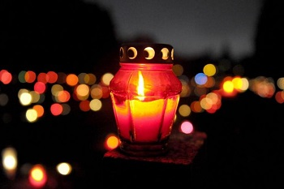
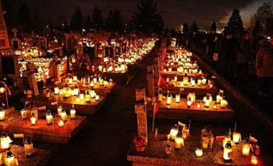
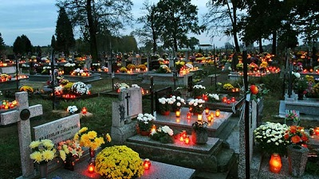

Wszystkich Świętych
Uroczystość obchodzona co roku 1 listopada w Kościele katolickim ku czci wszyskich chrześcijan, którzy osiągnęli stan zbawienia i przebywają w niebie
Historia
Uważa się, że uroczystość wywodzi się ze Wschodnich prowincji Cesarstwa Rzymskiego, gdzie w IV wieku w jednym wybranym dniu wspominali wszystkich męczenników Chrześcijańskich. Natomiast świętowanie 1 listopada w Rzymie rozpoczęto najprawdopodobniej w 741 roku. Papież Grzegorz III ufundował wówczas oratorium w bazylice św. Piotra na Watykanie
Zwyczaje w Polsce
W Dniu Uroczystości Wszystkich Świętych Polacy odwiedzają cmentarze, aby ozdobić groby swoich bliskich kwiatami i zapalić znicze
 Zaduszki
Zaduszki obchodzone są 2 listopada. Dzień Zaduszny jest wyrazem przekonania o obcowaniu świętrych, zmartwychwstanie ciał, życiu wiecznym
Zwyczaje ludowe
W oksresie przedchrześcijańskich kult zmarłych towarzyszył prawie wszystkim uroczystością. Jeszcze w XIXw. odprawiano uroczystości ofiarne z przywoływaniem zmarłych. Były one inspiracją dla "Dziadów" Adama Mickiewicza
Aktualnie, podobnie jak 1 listopada, odwiedza się cmentarze, przyozdabia pomniki i groby oraz zapala na nich znicze